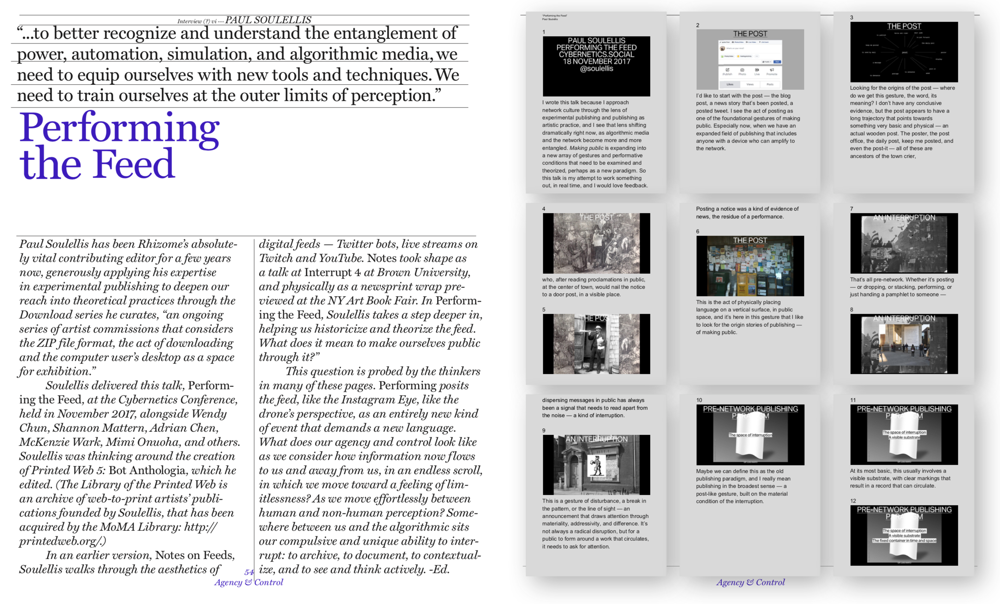

soulellis.com
/ writing

☡
“
Urgent Archives
,” essay in
Public, Private, Secret: On Photography and the Configuration of the Self,
Charlotte Cotton, ed., co-published by Aperture and ICP, 2018. Also appears in
Library of the Printed Web: Collected Works, 2013–2017
, published by Paul Soulellis, 2017.
☡
“
Search, Compile, Publish
,” 2013 essay appears in
Publishing Manifestos
, Michalis Pichler, ed., May 2018. (
2016 update
delivered as a talk at Miss Read, Berlin, June 10, 2016)
☡
“
Urgent Archives
,” Design Insights talk delivered at Walker Art Center, March 27, 2018.
☡
“
Sanctuary
,” essay included in
Safe
, a pavillion curated by Christopher Clary for The Wrong Digital Art Biennial, January 2018.
☡
“
Rozendaal: The Path to Abstraction
,” text accompanying the presentation of
into time.com
as part of
Net Art Anthology
, Rhizome, Dec. 2017.
☡
“
Performing the Feed
,” published in Rhizome’s Special Seven on Seven 10th Anniversary Magazine, May 2018 / Delivered at
The Cybernetics Conference
, NYC, November 2017.
☡
“
Merging with the Network
,” interview with Eva and Franco Mattes accompanying the presentation of
Life Sharing
as part of
Net Art Anthology
, Rhizome, Oct. 2017.
☡
“
Occupying Plöger’s Library
,” essay published in
exhibition catalogue for
Inherited Lies
by Wolfgang Plöger,
Konrad Fischer Galerie, Düsseldorf, 2017.
☡
“An improvisation,” an 8-page work for
White Zinfadel
magazine, with the John Cage Trust, May 2017.
☡
“Notes on Feeds” (
PDF
,
text only
), talk delivered at
Interrupt 4
, Brown University, April 28, 2017.
☡
“
The Download 6: A Desktop Lamentation
,” Rhizome, Sept. 2017.
☡
“
Library of the Printed Web: The Guy Who Makes Art Out of the Internet
,”
Vice Magazine
, The Future of Tech Issue, Feb. 2017.
☡
“
Carrying, embeddedness, printedness. Window-into-the-page. A grand assembling.
” Talk performed at Printed Matter on Dec. 2, 2016 for the launch of Morehshin Allahyari and Daniel Rourke’s
3D Additivist Cookbook
.
☡
“
2016: The Year According to Paul Soulellis
,” Walker Art Center, Dec. 2016.
☡
“
The Download 5: Dennis Cooper’s GIF Novels
,” Rhizome, Nov. 2016.
☡
“
The Download 4: Technologies of Care
,” Rhizome, Oct. 2016.
☡
“
Artist Profile: Lorna Mills
,” Rhizome, September 2016.
☡
“
Artist Profile: Travess Smalley
,” Rhizome, July 2016.
☡
“
A conversation with Paul Soulellis
,” interview with Kate Palmer Albers, July 2016.
☡
“
The Download 3: Incantations for the Birth of a Network
,” Rhizome, May 2016.
☡
“
The Download 2: The Distributed Monument
,” Rhizome, Feb. 2016.
☡
“
After the Hookup, An App
,” Rhizome, Dec. 2015.
☡
“
A BOOK IS THE BOOK: A READING IN 142 PARTS
,” talk performed at Printed Matter for the launch of
Code X
(Danny Aldred and Emmanuelle Waekerle, eds.), Nov. 2015.
☡
“The Printed Web,” essay in
Span: Conversations About Design and Technology
, (Rob Giampietro, Amber Bravo, eds.), Google Inc., Nov. 2015.
☡
“
The Download: Sorry to dump on you like this.zip
,” Rhizome, Nov. 2015.
☡
“
Poor Media on Demand: All the files of Printed Web 3
,” Rhizome, May 2015.
☡
“
Digital Publishing, Unzipped
,” Rhizome, March 2015.